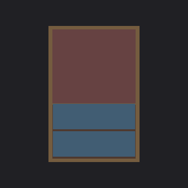
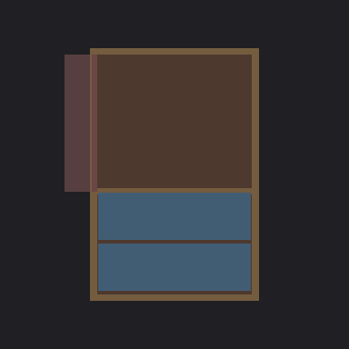
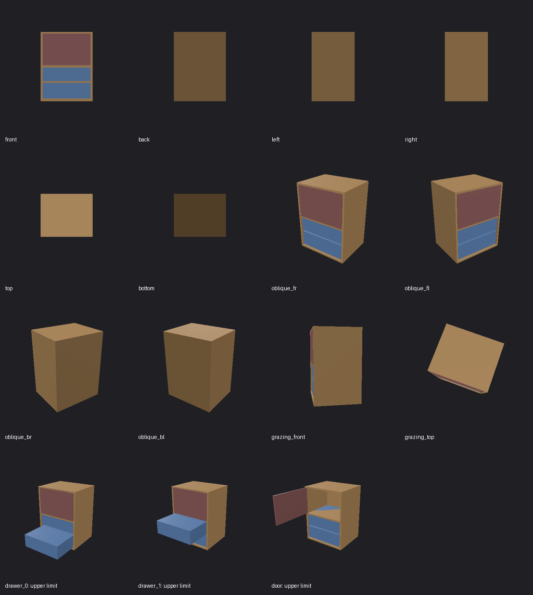

The articulated object matches the reference geometry and kinematics. The front view confirms the correct layout of the door and two drawers. Actuation of 'drawer_0' and 'door' to their limits produced valid motion consistent with the reference states (drawer extending outward, door swinging open). No defects detected within the observed scope.
Termination: judge_finished · Observations spent: 3 / 4
Full result · Observation trace · Repair feedback


